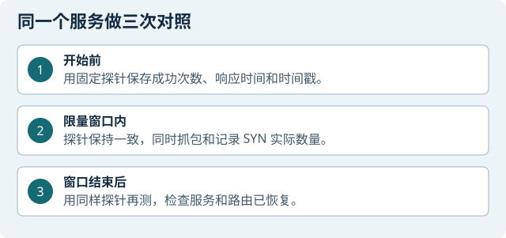

本章目标
用受控、有限的 SYN 探测观察你控制的隔离实验主机上的临时服务，并比较探测前、中、后三个时间窗的连接可用性。可先从离线示例 PCAP 与本机回环开始；网络练习只针对自有隔离主机上的单一临时服务。它不等同于机器人 ROS 控制，也不允许无限洪泛、随机源地址、多人 DDoS 或改测未授权目标。
比较前测、中测、后测的连接成功数、响应时间和服务端日志。短时结果只适用于本轮目标、预算和时间窗口，不能外推为普遍性能或攻击效果。

本章角色：A 是临时服务主机，M 是探测与抓包主机，B 是在场看守的小车，不作为探测目标。所有网络练习限于自有隔离实验主机。
准备与范围控制
角色：A 提供临时空目录服务，M 负责单目标有限 SYN 与抓包；B 如在场，由同伴看守且不作为目标。需要实验七工具、A 的空目录和 M 的新 RUN。禁止扫描网段，禁止使用网关、公共 DNS、校园网、机器人驱动端口或其他真实服务。
执行上限：现场例子最多 20 个 SYN、间隔 0.5 秒、最长 10 秒；一次运行，不因效果小而加量。中止方法须在开始前确认。目标身份、端口归属、临时服务恢复方法任一不清楚，只做离线学习。
操作步骤
先识别机器
A 临时服务主机 / M 探测主机 / B 小车看守 分别运行
hostname、date -Is、ip -br -4 addr、ip -br link、ip -4 route，记录当天身份与时钟差。目标地址不是本轮自有 A，或网络不属于隔离实验网：停止，不尝试“找一个能连的目标”。
复核工具和环境
A / M，普通用户终端 分别运行实验七角色检查器，使用新输出目录。确认必需工具、版本和文件校验通过。此项只检查本机，不代表服务或网络已验收。
FAIL、缺工具或哈希不符：保存原文，转离线材料学习，不临时安装或升级。
选择离线练习路径
M 用课件/课程包提供的示例 PCAP 在 Wireshark 打开；选一个 TCP 流，查看 SYN、SYN/ACK、ACK、RST 标志与时间线。确认示例文件标为离线材料。
只凭示例包不能说现场服务开放或不可用；将离线截图标注“示例”。
核对实验目标和范围
A / M 记录唯一 A 地址、单一服务端口、探测预算、开始/结束时间和停止人；探测只针对 A 的临时服务。B 若在场，由同伴看守且不作为目标。
目标或端口归属有疑问：停在本机回环练习。
创建空目录和新 RUN
A / M A 建一个专用空目录用于临时 HTTP 服务；M 建立本轮 RUN，保存角色、当天参数、路由、防火墙只读快照与起始时间。不要把个人文件放入服务目录。
目录中已有敏感文件、RUN 不能写入或参数仍是示例值：不启动服务。
检查端口当前归属
A 用
ss -ltnp查看将使用的端口。只有确认空闲后才能继续；不停止未知进程。若示例端口占用，选择自有隔离主机上的空闲端口，并同步更新 A/M 参数。占用进程归属不清：停止，不杀进程、不改系统防火墙。
先做 A 本机回环基线
A，普通用户终端 在 A 终端创建空目录并启动回环服务：
mkdir -p "$HOME/lab7_service_empty" python3 -m http.server 8080 --bind 127.0.0.1 --directory "$HOME/lab7_service_empty"另开终端访问 127.0.0.1:8080，再按 Ctrl+C 关闭服务。
回环只验证本机服务过程。它不能作为 M→A 网络测试或现场结论；输出异常时先停止并检查依赖。
启动单一临时服务
A，普通用户终端 进行隔离网对照时，先按本轮实测参数载入目标地址和端口，确认服务目录为空，再绑定到本机实验地址：
source ~/lab7_prep/现场参数.env mkdir -p "$HOME/lab7_service_empty" python3 -m http.server "$TARGET_PORT" --bind "$A_IP" \ --directory "$HOME/lab7_service_empty"保持前台终端运行。M 核对目标路由只走指定实验接口，不扫描其他主机。
服务绑到回环地址而 M 需要访问、路由走网关或 A 地址变化：停止，先修正参数；不扩大目标范围。
建立探测前连接基线
M 监测终端；A 服务终端 用本组监测工具对唯一目标做 15 秒 baseline 阶段，每秒最多一次普通连接，不发送应用数据：
python3 ~/lab7_prep/工具/tcp_monitor.py \ --target "$TARGET_IP" --iface "$M_IFACE" --port "$TARGET_PORT" \ --seconds 15 --phase baseline --execute --lab-confirmed \ --confirm-target "$TARGET_IP" --output "$RUN/baseline_connect"记录实际成功数、失败数和逐次响应时间；A 同时保存监听状态。先开 M 的定向抓包并确认写入本轮文件。
前测不稳定、抓包接口错误或没有 A 服务端监听证据：不进入探测窗口。
先预览有限任务
M，普通用户终端 载入当天参数及 RUN 后，预览本轮唯一目标任务：
python3 ~/lab7_prep/工具/syn_probe.py \ --target "$TARGET_IP" --iface "$M_IFACE" --port "$TARGET_PORT" \ --count 20 --pps 2 --seconds 10 \ --output "$RUN/syn_preview.json"预览应明确目标、接口、端口、20 包上限、2 包/秒、10 秒上限，且标明未发送。预览目标与本轮参数不一致、目标走错接口或工具拒绝：保存原文并停止；不得修改工具绕开限制。
同步开始探测中连接监测
M2 监测终端 先启动本组
tcp_monitor.py的 test 阶段，仅对同一目标做 15 秒、每秒最多一次普通连接监测，并写入新文件。确认中段 PCAP 正在记录。抓包未运行、监测命令指向另一目标或 A 服务监听不稳定：不要开始 SYN 探测。
运行一次预算受限的 SYN 任务
M 探测终端；A 观察；B 看守（若在场） 仅在预览正确、A 服务正常、三方时间窗口已对齐后，执行与预览相同参数的一次运行；目标确认值必须逐字等于本轮核实的 A 地址：
sudo python3 ~/lab7_prep/工具/syn_probe.py \ --target "$TARGET_IP" --iface "$M_IFACE" --port "$TARGET_PORT" \ --count 20 --pps 2 --seconds 10 \ --execute --lab-confirmed --confirm-target "$TARGET_IP" \ --output "$RUN/syn_once"工具只允许本组单一目标，最大 20 包、2 包/秒、10 秒；不可附加循环、伪造源地址或并行任务。A 保存服务监听/资源观察，M 保存原始回执与 PCAP。
超出预算、目标不匹配、工具拒绝、服务异常或看守要求停止：立即停止该进程并转恢复；不补足未发出的包、不重复覆盖本轮日志。
做探测中连接对照
M2 / A 在固定 15 秒 test 窗口记录连接成功数/总数和响应时间；A 同时记录服务实际接受的连接数。监测命令与 baseline 相同，只把阶段和输出目录改成本轮 test；探测回执包数、抓包 SYN 与监测客户端握手分开标记。
只看到 SYN/ACK 或工具显示“收到包”不能证明应用请求完成；客户端连接与服务端日志对不上时如实保留差异。
停止探测并做后测
M → A 确认唯一探测进程退出，启动同一监测工具的 recovery 阶段：
python3 ~/lab7_prep/工具/tcp_monitor.py \ --target "$TARGET_IP" --iface "$M_IFACE" --port "$TARGET_PORT" \ --seconds 15 --phase recovery --execute --lab-confirmed \ --confirm-target "$TARGET_IP" --output "$RUN/recovery_connect"继续对同一目标测 15 秒。A 确认临时服务仍可用，然后在原服务终端按 Ctrl+C 正常结束。
进程仍存在、端口未释放或后测失败：保持现场不启动下一轮，先查明服务状态。
复核与归档
M / A 在 Wireshark 中按时间窗区分普通监测连接、原始 SYN、SYN/ACK、RST；记录实际发包数、抓包计数和内核丢包。分别保存前/中/后客户端结果、A 服务日志和 PCAP SHA-256。
工具统计若出现负丢包率、响应包数大于发送数时，不把它写成真实丢包率；只报告原始计数和抓包可核对事实。
确认系统回到原状态
A / M 检查本轮临时服务与探测进程均已退出，测试端口已释放；比较本轮前后路由、防火墙原值，确认没有改系统转发或邻居配置。B 若在场，确认仍静止。
任一恢复项未确认：记录“待恢复”，由管理员处理；不清空防火墙、不杀其他人的服务。
检查与证据
把连接可用性按三个时间窗分开记录：前测（基线）、中测（探测时）、后测（恢复后），每次写成功数/总数、响应时间、目标和时间戳。再单独记录服务端接受数、探测实际发送量、PCAP 帧及丢包统计。仅报告本轮观察到的数据；有限测试不能证明普遍性能，也不能外推为洪泛或分布式拒绝服务效果。
常见问题
- 端口占用：查进程归属；未知进程不停止，改用空闲端口后同步更新 A/M 参数。
- 连接超时或显示 filtered：确认服务绑定、A/M 路由和抓包；不换目标主机或扫描网段。
- SYN 后 RST：保存双端证据，可能是服务关闭或客户端内核回应；不能单独称为队列耗尽。
- 连接成功率变化但服务端无日志：先核对抓包/日志口径，不能臆补缺失事件。
- 小车或其他现场设备异常：停止探测并由看守人实体停车，保留本轮证据。
收尾
停止有限探测 → 保存 M 抓包与结束统计 → 正常结束 A 临时服务 → 确认端口释放 → 核对系统设置和现场停车 → 对日志、参数与 PCAP 计算哈希。离线示例、回环服务和隔离网现场结果分开归档。
本章证据范围
未观察到不可用的结果只适用于记录中的目标、预算和时间窗口。不要由短时连接数推断总体性能；不要把 ROS 连接 ACK、SYN/ACK 或孤立的 hping 统计写成机器人控制效果。